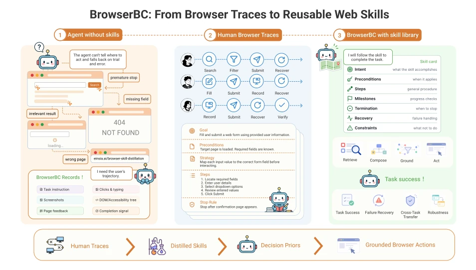
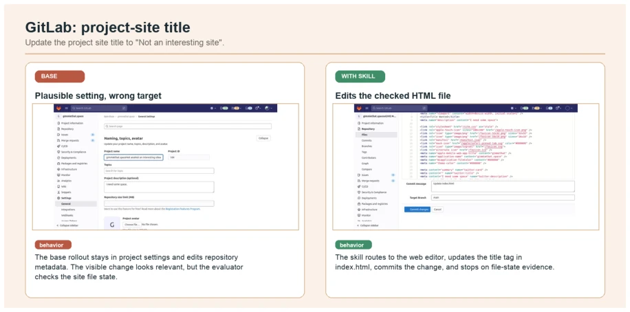
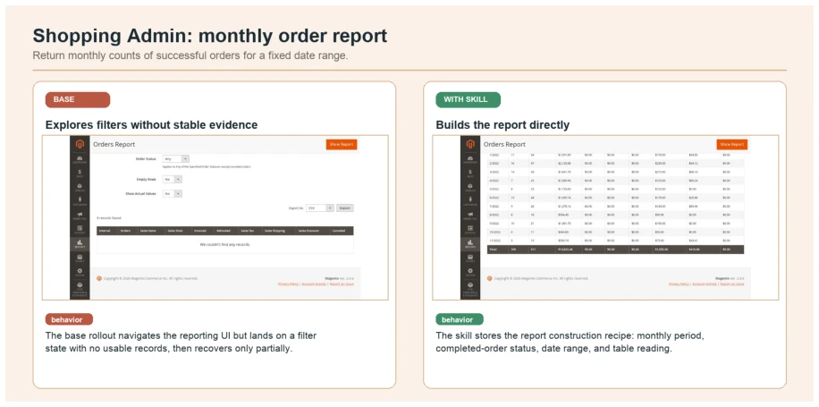
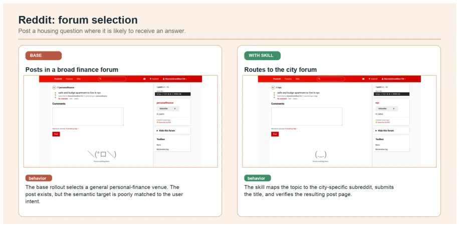
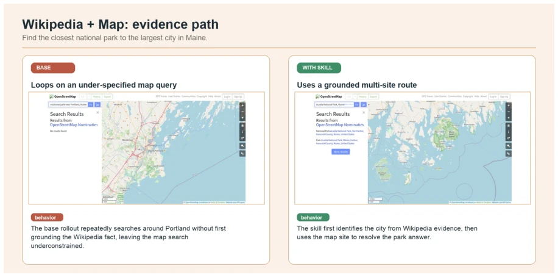

浏览器 Agent 的瓶颈不在操作，而在信息不全时的决策。现有工作如 Mind2Web (Deng et al., 2023) 和 WebArena (Zhou et al., 2024) 虽然提供了环境，但 Agent 仍依赖 trial-and-error，因为缺乏决策先验。人类浏览轨迹包含隐性知识，但直接克隆 raw traces 太脆，依赖 DOM 坐标和页面状态，换个网站就废。WebLINX (Lù et al., 2024) 收集了轨迹，但没解决泛化问题。本文认为可复用单元不是动作也不是轨迹，而是自然语言技能。
—

Figure 1 Motivation of BrowserBC. BrowserBC turns human browsing traces into reusable natural-language skills, providing agents with decision priors for navigating unfamiliar websites.
Figure 2 Overview of BROWSERBC. BrowserBC cleans and segments raw browser traces, distills them into structured natural-language skills, organizes the skills into a graph, and retrieves relevant skills to guide browser-agent execution on new tasks.
Figure 4 OSWorld-style desktop case studies. In both cases the no-skill agent knows the correct command but binds it to the wrong filesystem context, while the matched skill makes the implicit path-grounding procedure explicit.

Figure 5 GitLab case demo. The base rollout changes a plausible project setting, while the skill-conditioned rollout edits the checked HTML file and commits the target state.

Figure 6 Shopping Admin case demo. The skill captures the report-construction procedure: date range, monthly aggregation, completed-order filter, and table reading.

Figure 7 Reddit case demo. The skill encodes semantic forum selection and routes the housing question to the city-specific forum before verifying the created post.

Figure 8 Wikipedia and map case demo. The skill preserves the cross-site evidence order: ground the city fact first, then query the map site for the park answer.